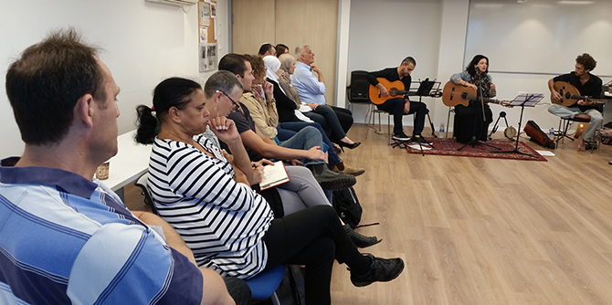

On October 17, 2017, the second cohort of the Mandel Program for Regional Leadership in the North began its studies. The opening session was attended by 21 men and women, Arabs and Jews, from Israel’s northern region. They hail from diverse backgrounds and include social and environmental activists, business entrepreneurs, local government officials, and educators.
The session introduced the fellows to each other and to the program, giving them a sense of what to expect during the year to come. It also included a workshop on traditional songs in four languages – Yiddish, Hebrew, Arabic and Ladino – which was conducted by singer and musician Rakefet Amsalem. The fellows then met social entrepreneur Yuval Roth, the founder of The Road to Recovery, an NGO that operates a network of volunteers that transport Palestinian patients between Israeli government checkpoints and Israeli hospitals.
The Mandel Program for Regional Leadership in the North is a one-year, in-service program that comprises one day of intensive study a week, along with several intensive workshops and two to three-day study tours.

{kind=link}